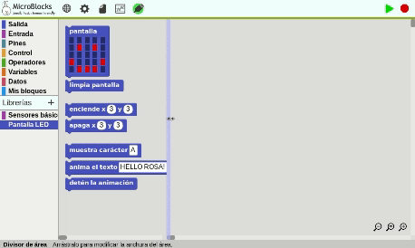

Microblocks es capaz de ejecutar varias tareas a la vez, esta característica hace que podamos pensar en resolver problemas de forma diferente, sin tener que estar atados a un sólo hilo de ejecución, o esperar a que termine una tarea para que empiece otra. En este caso usaremos politonos (tenemos una micro:bit V2 y tiene zumbador) y la pantalla. Para poner a nuestra disposición los politonos hay que añadir una librería como muestro a continuación.
